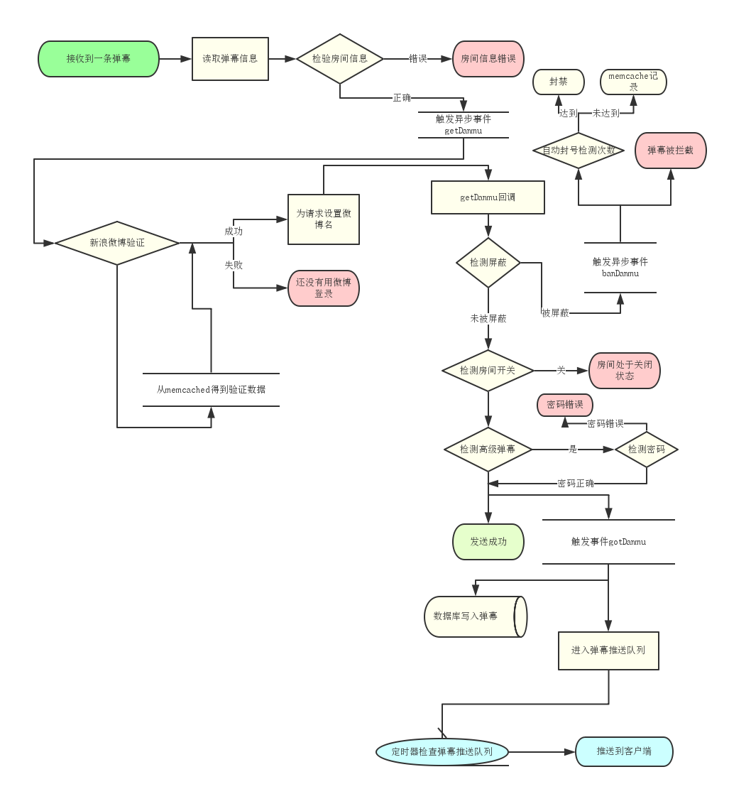

danmu-server
弹幕服务器。
其新浪微博登录和自动封号功能为扩展组件，可直接通过删除lib/ext/下的对应目录停用。
项目可直接在Windows和Linux上运行。Mac未测试。
功能特色
- 房间功能，可用一个端口为多个不同的弹幕客户端提供服务
- 搜索弹幕功能，可随时搜索弹幕
- 黑名单功能，可封禁用户
- 在开启新浪微博登录的情况下封禁新浪微博
- 在默认配置下根据Canvas指纹 + IP + User-Agent共同计算
- 可设置关键词替换、关键词拦截
- 记录用户的每一条弹幕（MySQL）
- 易于部署，简单高效
部署方式
- 下载并安装iojs、MariaDB和Memcached(Linux)。Windows用户请自行查找适合的Memcached版本，如不使用自动封号和新浪微博可不安装。另外，Node和MySQL也同样支持。
- 配置MariaDB，创建数据库等，不需要创建数据表。
- 修改
config.js，使其参数与环境相符。如果要用阿里云的OCS服务则需要在config.js里把cache/type调整为aliyun然后再npm install aliyun-sdk。 - 切换到
cmd或sh，cd到程序所在目录执行npm install，安装程序依赖库。 - 现在，你可以直接
npm start启动。
搭配项目
负载测试
环境：
Linux 3.10.0-123.9.3.el7.x86_64
Intel(R) Xeon(R) CPU E5-2630 @ 2.30GHz
512MB
node v0.12.1
mariadb-server.x86_64 1:5.5.41-2.el7_0
阿里云杭州机房D，一个福州联通客户端连接。缓存选用OCS。
ab -n 6000 -c 1000 -v 4 -p "post.txt" -C "weibo=嘛就这样;connect.sid=啊啊" -T "application/x-www-form-urlencoded" http://127.0.0.1:3000/post
默认配置，开启新浪微博登录，开启自动封禁。QPS 225.38 / 241.58
默认配置，关闭新浪微博登录，关闭自动封禁。QPS 461.97 / 431.51
默认配置，删除日志输出，关闭新浪微博登录，关闭自动封禁。QPS 720.89 / 812.66
环境：
iojs v1.8.1
默认配置，开启新浪微博登录，开启自动封禁。QPS 444.42 / 536.25
默认配置，关闭新浪微博登录，关闭自动封禁。QPS 633.99 / 865.28
流程图

开发者
zsx - http://www.zsxsoft.com / 博客 - http://blog.zsxsoft.com